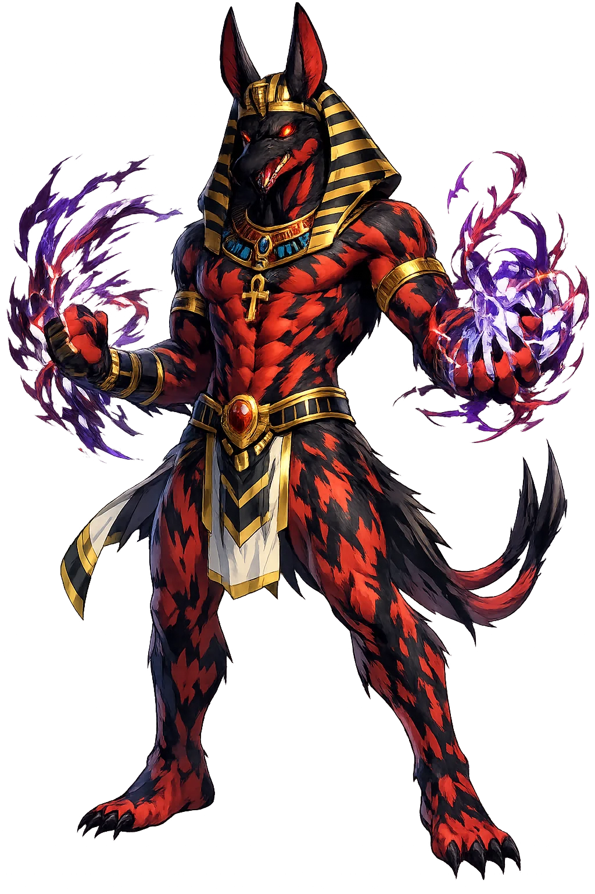

Stories of Stḫ
No Egyptian god has a stranger career: royal patron of the Second Dynasty, villain of the Osiris cycle, defender of the sun, and finally — in the Greco-Roman dusk — demonized as Typhon. stḫ is all of them at once, and the texts refuse to choose.
The Egyptian sources and Plutarch tell the crime in two registers, and the difference matters. The Pyramid Texts know that Set drowned his brother at Nedyet in the Delta — 'thrown down in the water' is the formula the liturgy keeps — while Plutarch's much later Greek account (On Isis and Osiris 13–18) stages the famous plot: a gorgeous chest made to Osiris' exact measure, a banquet, seventy-two conspirators, the river, the terebinth tree. Plutarch's Osiris is then cut into fourteen pieces; the Egyptian liturgies say nothing of this, and scholars treat the dismemberment as a late overlay. Either way, Set's act is regicide and fratricide at once — the brother who wants the throne kills the brother who has it. The myth fixes Set's role in the cosmos: he is the violence inside the family of order, and his crime is the reason Egypt has a funeral religion at all.
The Contendings of Horus and Set (Papyrus Chester Beatty I) is Egypt's longest surviving narrative text, and it is a divine lawsuit run like a wrestling tournament. Set and Horus duel as hippopotami, charging to stay submerged three full months; Set proposes a night in one bed and is disgraced; Isis, disguised as a maiden, tricks Set into judging against himself; Horus, enraged at his mother's mediation, tears off her head, and Set answers by beheading him in turn (Thoth restores both). The Ennead's judges keep switching sides — the text itself calls them 'lunatics.' The ending is partition, not annihilation: Horus takes the black land, Set the desert and the foreign countries, both bound by oath. The myth writes checks and balances into heaven itself: chaos loses the throne but keeps a frontier, and the world proves big enough for both principles.
The Books of the Netherworld — the Amduat first, then the Book of Gates and the Book of Caverns — assign Set his strangest office: standing at the prow of Rē's barque through the twelve hours of night, spearing Apophis, the great serpent who waits each night to swallow the sun. No other god is equal to it — not Horus, not 'the great of strength' among them — because fighting pure chaos requires a nature that is itself turbulent. Hour by hour the barque's crew must be defended against the serpent's coils, and it is Set's spear that holds the line until dawn; in the same corpus the wounded sun is addressed as one whom Set protects 'even as a son.' The myth is Egypt's most uncomfortable insight: order survives not by excluding violence but by conscripting it — aimed, disciplined, and pointed outward at the true enemy.
Set's royal career is documented, not inferred. The Second-Dynasty king Peribsen wrote the Set-animal above his serekh in place of Horus — the only pharaoh to claim the god so exclusively; his successor Khasekhemwy carried both gods together, reconciled in a single name. The Hyksos later made Set their chief deity at Avaris, equating him with their own storm-god Baal — an identification the warrior pharaohs of the New Kingdom kept, in victory rather than submission: Seti I, whose very name means 'man of Set,' and Ramesses II, who praised 'Set, great of strength' on the field of Qadesh. Set's temple at Nubt (Ombos, near Naqada), the 'gold town,' was his cult centre from Egypt's earliest strata. The myth-in-history says: the god of the desert is the god of soldiers and of kings at war — Egypt feared him precisely because it used him.
Plutarch (ch. 12) preserves the calendar myth of Set's nativity. The sun-god Rē, warned that a child of Nut would usurp his throne, cursed her: she should bear 'on no day of the year.' Ḏḥwtj, the moon's reckoner, played draughts with the moon-god and won five days of light — the epagomenal days that sit outside the calendar — and on them Nut bore her five children. Osiris came first, Horus the Elder second; Set came third, 'not in due season or manner, but with a blow he burst through his mother's side and leapt forth'; Isis and Nephthys followed. Born off-calendar and violently, Set is the god of the extra day — the unscheduled, the event that breaks the schedule. The myth reads his whole later career from his birth: he is the one thing the ordered year cannot plan for.
stḫ is the god Egypt could neither worship comfortably nor live without: lord of the red desert, the storm, and the foreign lands — the murderer of Osiris, and also the only god strong enough to stand at the prow of Ra's barque and spear the serpent of chaos, night after night.
The forked staff of power, headed with his animal — the sceptre every god carries carries his face.
Thunder, desert wind, and the red land's violence — Egypt's weather of war.
Each night in the Duat he spears the chaos-serpent from the barque's prow — order's strongest arm.
His unidentified animal: part greyhound, part aardvark, part donkey — a creature as unclassifiable as the god.
From the original script to the living URL
𓋴𓏏𓐍
The name in its original Egyptian form. Stḫ (𓋴𓏏𓐍) is attested in the source tradition — “The god Seth/Setekh; etymology disputed, possibly "the one who separates"”. Its original diacritics and script distinctions carry the full phonetic and orthographic weight of the source tradition.
seth
Reduced to plain seth, the name loses everything that made it specific: original diacritics and script distinctions. What remains is an ASCII string that machines can parse but that no longer speaks with its original voice.
Stḫ
The Unicode restoration recovers what ASCII flattened. Stḫ restores original diacritics and script distinctions, returning the name to its original written dignity. The domain encodes to Punycode, but the browser displays the truth.
Stḫ.com → xn--st-cvs.com
The non-ASCII characters in Stḫ are encoded while the ASCII remains visible. To the DNS, it is Punycode. To humanity, it is Stḫ.
Owned, ideal, and ASCII forms of Stḫ
Stḫ
Restores 𓋴𓏏𓐍. The live temple domain — stḫ.com.
seth
Flattens 𓋴𓏏𓐍. The plain ASCII fallback — what DNS and legacy systems see.
How Stḫ was spoken
How Stḫ travels from ancient script to the modern URL
stḫ is the god of the strength you hope never to need. Egypt's answer to evil was not to banish it but to post it at the prow: the desert's violence pointed outward, against the true nothing. He asks every ordered world the question it least likes: what, in you, is strong enough to fight the serpent — and where will you let it stand?
Enter Extended Lore